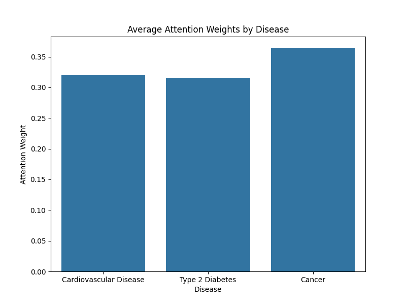

Research Findings
Model Architecture
Our multitask learning model uses shared layers with attention-based pooling to predict risk for multiple diseases simultaneously.
Performance Metrics
The model achieves high accuracy across all three disease tasks:
- Cardiovascular Disease: 98% accuracy
- Type 2 Diabetes: 98% accuracy
- Cancer: 99% accuracy
Feature Extraction
The attention-based pooling mechanism enhances genetic feature extraction by prioritizing different SNPs for each disease.
Data Analysis
Exploratory data analysis revealed patterns in genetic effect sizes across diseases.